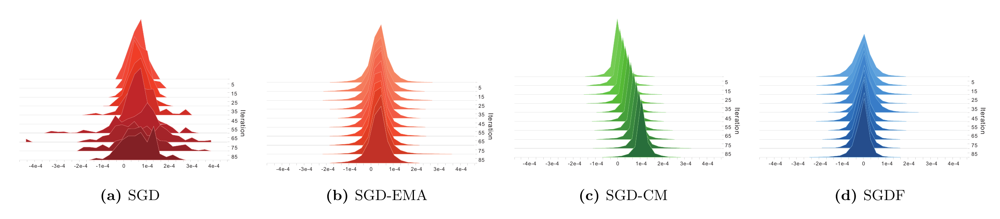
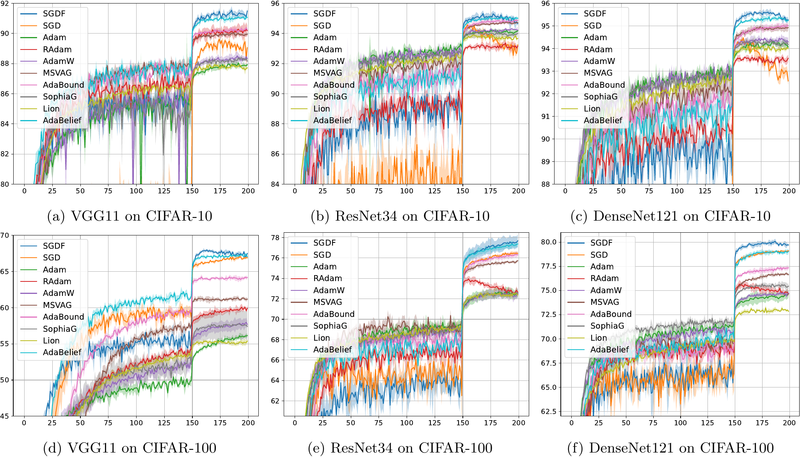

Dynamic Momentum Recalibration in Online Gradient Learning
1Shenyang University of Chemical Technology · 2University of Louisville · 3Northeastern University
† Corresponding authors
CVPR 2026
TL;DR: SGDF optimizer based on optimal linear filter principles, which can dynamically adjust gradient estimation to balance bias and variance.
Stochastic Gradient Descent (SGD) and its momentum variants form the backbone of deep learning optimization, yet the underlying dynamics of their gradient behavior remain insufficiently understood. In this work, we reinterpret gradient updates through the lens of signal processing and reveal that fixed momentum coefficients inherently distort the balance between bias and variance, leading to skewed or suboptimal parameter updates. To address this, we propose SGDF (SGD with Filter), an optimizer inspired by the principles of Optimal Linear Filtering. SGDF computes an online, time-varying gain to dynamically refine gradient estimation by minimizing the mean-squared error, thereby achieving an optimal trade-off between noise suppression and signal preservation. Furthermore, our approach can be extended to other optimizers, showcasing its broad applicability to optimization frameworks. Extensive experiments across diverse architectures and benchmarks demonstrate that SGDF surpasses conventional momentum methods and achieves performance on par with or beyond state-of-the-art optimizers.
Keywords: Optimization, Signal Processing, Bias and Variance, Estimation Theory
Standard momentum methods use fixed coefficients, which often force a rigid trade-off between gradient bias and gradient variance. Excessive smoothing may slow down convergence and trap the optimizer in plateaus, while insufficient regulation of stochastic noise can lead to unstable updates and oscillations.

SGDF formulates gradient estimation as an online filtering problem. Instead of relying on a fixed momentum coefficient, SGDF dynamically computes a time-varying gain to fuse the historical momentum estimate and the current stochastic gradient.

SGDF achieves consistent improvements across image classification, object detection, and ViT post-training benchmarks.
Part A: Generalization Across CNN Architectures
CIFAR Top-1 Accuracy (%)

ImageNet Top-1 Accuracy (%)
| Method | VGG11 | VGG13 | ResNet34 | ResNet50 | DenseNet121 | DenseNet161 |
|---|---|---|---|---|---|---|
| SGD | 70.37 | 71.58 | 73.31 | 76.13 | 74.43 | 77.13 |
| SGDF | 71.34 | 72.74 | 74.07 | 76.72 | 75.75 | 78.34 |
Part B: Frozen-backbone ViT Post-training
Top-1 Accuracy (%)
| Model | Method | CIFAR-10 | CIFAR-100 | OxfordPets | OxfordFlowers | Food101 | ImageNet |
|---|---|---|---|---|---|---|---|
| ViT-B/32 | SGD | 98.71 | 90.62 | 89.71 | 96.79 | 88.56 | 81.42 |
| ViT-B/32 | SGDF | 98.74 | 91.44 | 92.68 | 97.17 | 89.35 | 81.52 |
| ViT-L/32 | SGD | 98.73 | 91.30 | 85.21 | 96.52 | 89.13 | 81.28 |
| ViT-L/32 | SGDF | 98.83 | 92.20 | 91.96 | 96.79 | 90.04 | 81.38 |
Part C: Comparison with State-of-the-Art Optimizers
ResNet18 on ImageNet
| Metric | SGDF | SGD | PAdam | AdaBelief | AdaBound | Yogi | MSVAG | Adam | RAdam | AdamW |
|---|---|---|---|---|---|---|---|---|---|---|
| Top-1 | 70.51 | 70.23 | 70.07 | 70.08 | 68.13 | 68.23 | 65.99 | 63.79 | 67.62 | 67.93 |
| Top-5 | 89.69 | 89.40 | 89.47 | - | 88.55 | 88.59 | - | 85.61 | - | 88.47 |
Part D: Object Detection
Faster R-CNN on PASCAL VOC mAP (%)
| Method | RAdam | AdamW | Adam | SGD | EAdam | AdaBelief | SGDF |
|---|---|---|---|---|---|---|---|
| mAP | 75.21 | 78.48 | 78.67 | 80.43 | 80.62 | 81.02 | 83.81 |
SGDF consistently improves over SGD and conventional momentum-based optimizers across CNN classification, object detection, and frozen-backbone ViT post-training.
@article{yao2026dynamic,
title={Dynamic Momentum Recalibration in Online Gradient Learning},
author={Yao, Zhipeng and Yu, Rui and Chang, Guisong and Li, Ying and Zhang, Yu and Li, Dazhou},
journal={arXiv preprint arXiv:2603.06120},
year={2026}
}